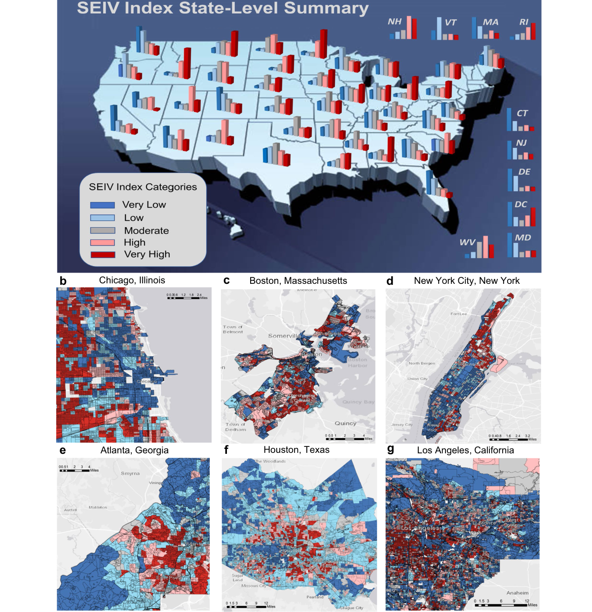
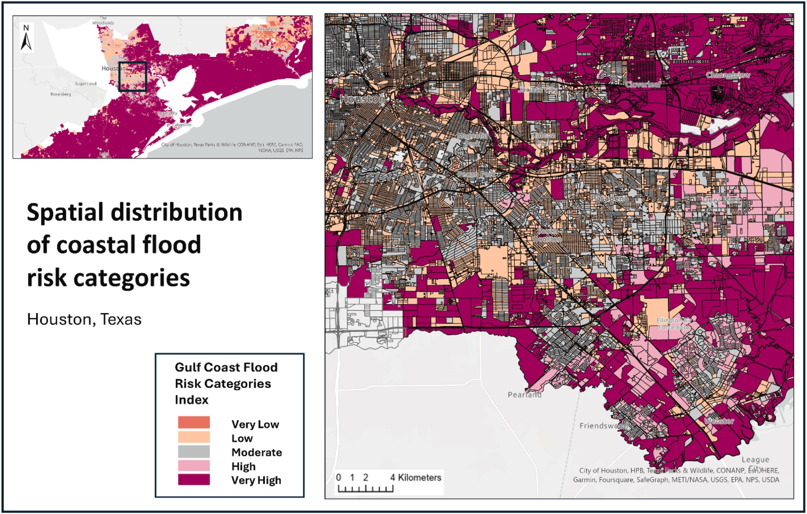
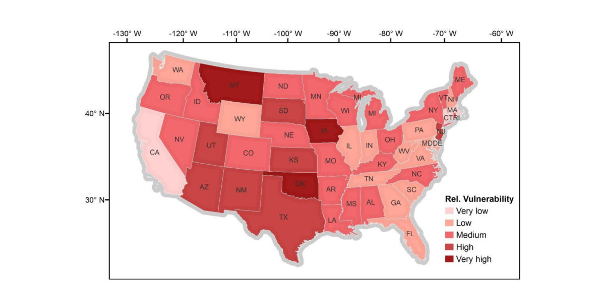
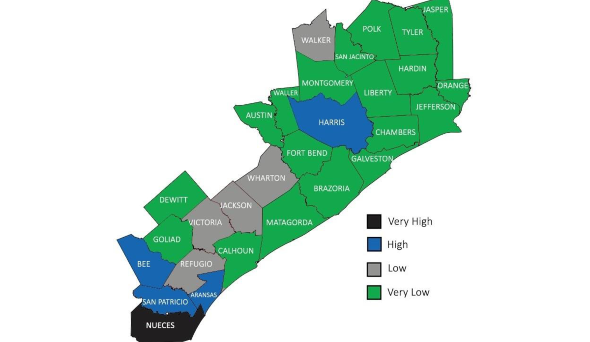
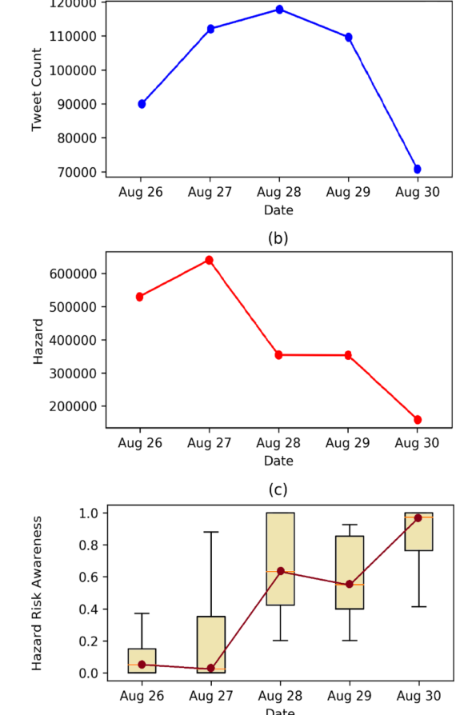

Block-level vulnerability across the United States
Spatial patterns of socioeconomic and infrastructure vulnerability across the United States and selected metropolitan areas.
View publication ↗Understanding how hydrological hazards affect communities and infrastructure.
Selected publications examine fine-scale vulnerability, coastal flood risk, drought vulnerability, and public risk awareness during extreme events.
Mapping vulnerability and coastal flood risk at fine spatial scales.

Spatial patterns of socioeconomic and infrastructure vulnerability across the United States and selected metropolitan areas.
View publication ↗
Block-level coastal flood risk categories across the Houston metropolitan area.
View publication ↗Understanding geographic differences in drought exposure, sensitivity, and adaptive capacity.

State-level patterns of relative drought vulnerability across the contiguous United States.
View publication ↗Examining how public risk awareness changes during extreme events.

Spatial variation in hazard risk awareness across southeast Texas counties affected by Hurricane Harvey.
View publication ↗
Temporal variation in social media activity, hazard conditions, and the hazard risk awareness index.
View publication ↗Figures are reproduced from published research. Confirm applicable publisher reuse terms before public deployment.